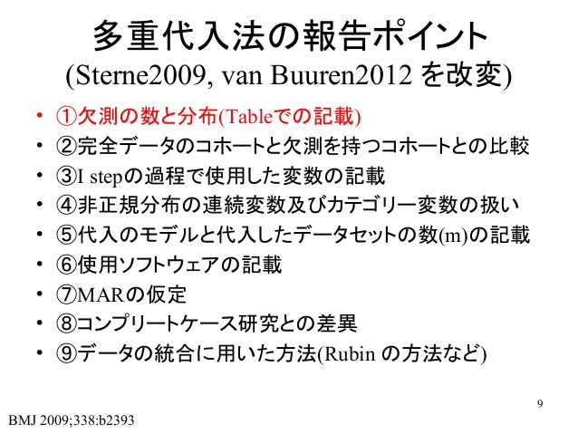

単純に欠損値を除去するのではなく、欠損値が生じている背景や欠損値の種類を踏まえた上での対応方法。
Rでの欠損値の取り扱い：NAなどの取り扱い方法はこちらに。
Rで利用できる多重代入法の主なパッケージとしてはmiceとAmeliaがある。多重代入法で作ったデータセットを解析に投げる方法が少し限られそう。
様々な多重代入法アルゴリズムの比較～大規模経済系データを用いた分析～
Combining bootstrapping with multiple imputation – The Stats Geek

hmiscパッケージの一部でも？ CRAN - Package Hmisc Hmisc < Main < Vanderbilt Biostatistics Wiki aregImpute function | R Documentation
MCARかどうかの検証にLittleのMCARテスト（BaylorEdPsychパッケージ、ちょっと古い） A Test of Missing Completely at Random for Multivariate Data with Missing Values: Journal of the American Statistical Association: Vol 83, No 404 LittleMCAR function | R Documentation
hypothesis testing - Interpretation of Little’s MCAR test - Cross Validated
Rでの欠損データ解析のための多重代入法の一つであるmultiple imputation by chain equation; MICEを提供してくれるパッケージ。オランダのユトレヒト大学の Stef van Buuren (2012)を中心としたチームにより開発された。完全条件付き指定（FCSS: Fully Conditional Specification）連鎖方程式（Chained Equations）
欠損値の種類と補完とRでのワークフロー - Note of Pediatric Surgery
Handling missing data with MICE package; a simple approach | DataScience+ Imputing Missing Data with R; MICE package | DataScience+
imp <- mice(data, m = 数字, seed = 数字, meth = "norm")上記で生成した補定済データは imp の名称で保存されており、with 関数を用いて回帰分析を行うことができる。統合後の結果を見るには、pool 関数を用いる。methには多くの補定モデルが準備されている。
fit <- with(imp, lm(変数 1~変数 2+変数 3))
summary(pool(fit))glm.midsは教科書などでは広く使われているが、現在は後方互換のために残されているだけで、「with.mids」を利用すれば任意の式を当てはめることができる。
Rでの欠損データ解析に用いるパッケージ。EMBアルゴリズムを用いている。miceに比べて早いらしい。 Expectation-Maximization with Bootstrapping。伝統的な期待値最大化法(EM: Expectation-Maximization)にノン パラメトリック・ブートストラップ法を応用したものらしい(Honaker and King, 2010)。
CRAN - Package Amelia Rで多重代入法：Ameliaパッケージ | 英語教育0.2
Ameliaを用いて欠損値対応を行なった場合、その解析にはZeligパッケージを用いることになりそう。